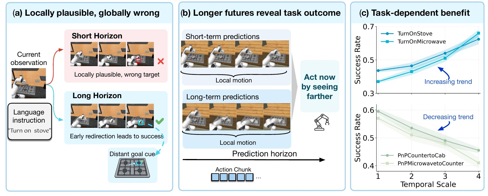
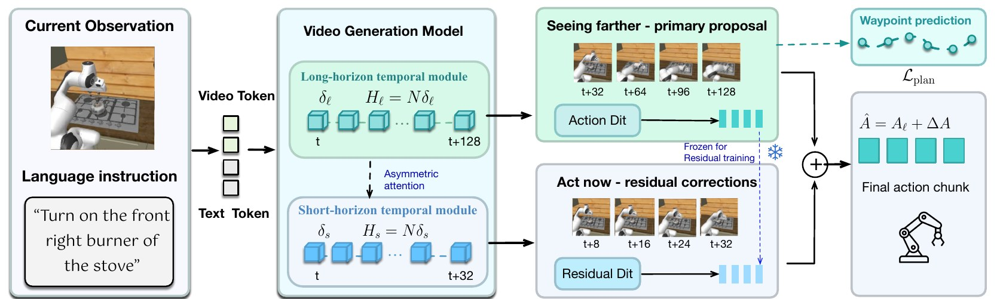
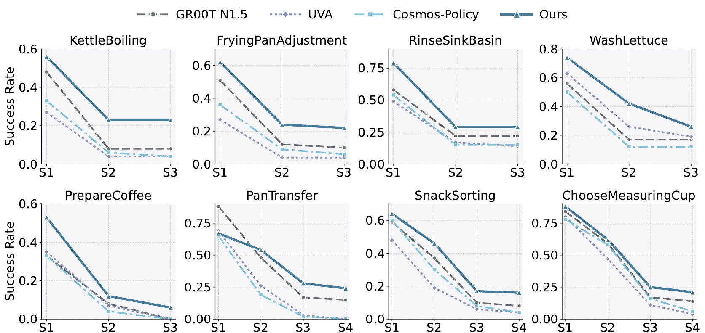

World Action Models (WAMs) provide predictive context for robot manipulation by conditioning action generation on imagined future visual states. However, existing WAMs commonly couple the visual prediction horizon to the action horizon, restricting future information to the immediate interaction and potentially obscuring longer-term task consequences. We show that prediction horizon introduces a fundamental trade-off: short-horizon futures preserve fine-grained motion and interaction details, whereas longer-horizon futures capture broader task progression but with greater visual uncertainty, making the most useful temporal scale task dependent. Building on this insight, we propose Seeing Farther to Act Now (SFAN), a multi-timescale world-action model that decouples visual prediction from the executable action horizon and assigns complementary roles to different temporal scales. SFAN uses sparsely sampled long-horizon futures to provide broader task context and generate the primary action prediction, while a complementary short-horizon pathway densely samples nearby futures to predict a residual correction conditioned on the primary action. This asymmetric design allows longer-range futures to guide interaction selection while preserving the fine-grained local information needed to refine how the selected interaction is executed. Extensive experiments on simulated and real-world robot manipulation demonstrate that SFAN consistently outperforms existing baselines, with particularly strong gains on tasks that benefit from longer-horizon future context.

Average success over 24 household tasks on a 7-DoF Franka Panda, with 50 demonstrations per task and 50 rollouts per task.
| Method | Average success |
|---|
Eight multi-stage tasks with 100 demonstrations each. SFAN leads from the first stage and keeps more rollouts on track in later stages.

AgileX robot, 100 demonstrations per task, 15 rollouts per method under the same initial configurations.
| Two-Pen Retrieval | First red | Second red | Full |
|---|---|---|---|
| GR00T-N1.5 | 0.40 | 0.20 | 0.13 |
| Cosmos-Policy | 0.60 | 0.33 | 0.33 |
| SFAN | 0.73 | 0.47 | 0.40 |
| Pen–Cup–Plate | Pen grasp | Cup grasp | Full |
|---|---|---|---|
| GR00T-N1.5 | 0.67 | 0.20 | 0.07 |
| Cosmos-Policy | 0.53 | 0.13 | 0.13 |
| SFAN | 0.87 | 0.47 | 0.33 |
@misc{rong2026sfan,
title = {Seeing Farther to Act Now: Long-Horizon Future
Modeling for Robot Manipulation},
author = {Rong, Wenxin and Wang, Haoxuan and Wang, Feiran and
Kawanishi, Yasutomo and Yan, Yan},
year = {2026}
}